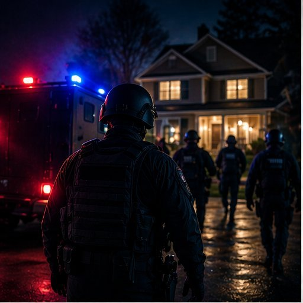

Swatting...
a phone call that could get someone killed.
Swatting is a fake 911 call made to send an armed SWAT team to another person's home. It starts with a keyboard. It ends with a battering ram.

§ 01 What Is Swatting?
Shapiro (2023b) defines swatting as a fake 911 call that reports a serious violent emergency — such as a bomb threat, a hostage situation, or an active shooter — at an address where no emergency is actually happening. The goal is to send a Special Weapons and Tactics (SWAT) team to attack an innocent person.
- Early cases were treated as pranks, but today legal experts see swatting as a serious felony crime that uses technology to hurt people (Shapiro, 2023d).
- Its actions are similar to cyberstalking and domestic terrorism (Enzweiler, 2015; Shapiro, 2023d).
- Swatters attack to "control, intimidate, humiliate, and physically endanger the target" (Shapiro, 2023d).
§ 02 How the Internet Makes It Possible
Shapiro (2023a) lists four parts of the online world that help cybercrime happen:
- Lack of empathy online — offenders do not see their victims, so they do not feel bad for them.
- Mob mentality — people act worse in groups than they would alone.
- Anonymity — offenders can hide who they are.
- Blame sharing — when many people are involved, no one feels fully responsible.
Fake caller ID lets a swatter make a 911 call look like it came from the victim's own neighborhood, even when the caller is in another country (Shapiro, 2023b). The personal information needed to find a victim is cheap and easy to get from data broker websites and social media (Shapiro, 2023d).
§ 03 By the Numbers
Who the Offender Usually Is
From Shapiro's (2023b) sample of 48 arrested U.S. swatters:
§ 04 A Short Timeline
§ 05 Explore the Site
References
- Enzweiler, M. J. (2015). Swatting political discourse: A domestic terrorism threat. Notre Dame Law Review, 90(5), 2001–2038.
- Shapiro, L. R. (2023a). Introduction: The Internet as a criminal enabler. In Cyberpredators and their prey (pp. 1–16). Boca Raton, FL: CRC Press.
- Shapiro, L. R. (2023b). Online swatters. In Cyberpredators and their prey (pp. 43–72). Boca Raton, FL: CRC Press.
- Shapiro, L. R. (2023d). Assessing legal needs: Is it time to criminalize swatting? Criminal Law Bulletin, 59(1), 95–114.